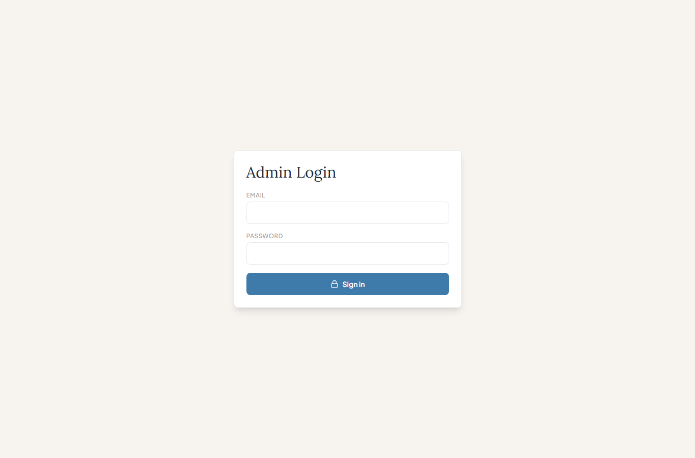

Clinic Admin User Manual
A simple guide for managing OJT students, schools, time logs, and activity history.
For clinic admins

Actual screenshot from the website.
Big idea: The clinic admin keeps the OJT list clean. Think of it like a school notebook: add students, choose their school, check their hours, and approve time logs.
1. How to Login
- Open the website and go to /admin.
- Type your admin email.
- Type your password.
- Click Login.
2. Where to Work on OJT
After logging in, click the OJT button in the admin menu. You will see four small tabs.
Manage OJT
Add, search, edit, delete, and export students.
Schools
Add schools and coordinator details.
Time Logs Review
Approve, reject, or adjust hours.
3. Add a School First
- Open the Schools tab.
- Type the school name.
- Type the coordinator name, email, phone, and address if you have them.
- Type a simple access code for the coordinator.
- Click Add School.
Easy rule: Add the school before adding the student. Then you can pick the school from a list.
4. Add an OJT Student
- Open Manage OJT.
- Click Add.
- Type the student name.
- Select the school from the dropdown.
- Fill in course, birthday, email, required hours, start date, and end date.
- Click Add OJT.
5. Review Time Logs
- Open Time Logs Review.
- Read the student name, date, time in, time out, and notes.
- Click Approve if the time is okay.
- Click Adjust if the hours need fixing.
- Click Reject if the time should not count.
6. Check History
Open Activity Logs to see what was created, approved, rejected, or adjusted.